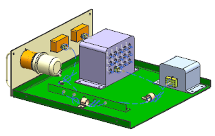

Open the assembly
-
On the Standard toolbar, click Open
 .
.
-
Make sure the Use Partial Loading check box is cleared.
-
Double-click rte1_drawer_assm_4.

-
Make rte1_drawer_harness_4 the Work Part.